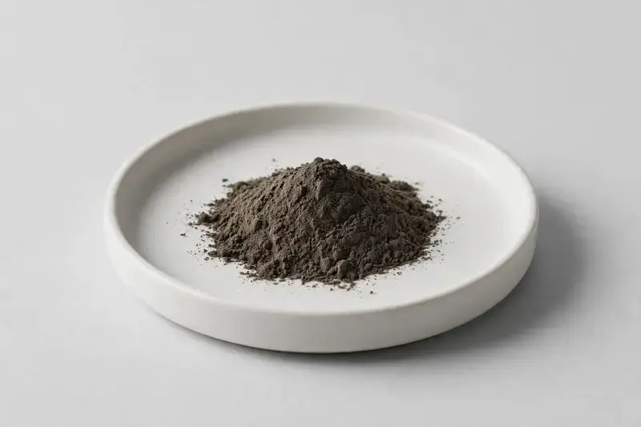

Nigella sativa seed, standardized for immune and antioxidant-oriented formulations.

Overview
Black Seed Extract is produced from the seed of Nigella sativa and is typically standardized around thymoquinone. Demand is steady across immune and antioxidant-oriented supplement ranges, including capsule, powder and oil-adjacent formats. Sourcing runs through vetted partner producers, and we confirm thymoquinone grade, seed sourcing and testing scope against your target specification.
Specifications below reflect commonly requested options in the market — not a stock list. Share your target spec and we'll confirm exactly what we can supply, honestly.
| Specification | Details |
|---|---|
| Botanical identity | Nigella sativa, seed |
| Source material | Seed |
| Marker compound | Thymoquinone — commonly requested: 0.5–5% (HPLC) |
| Appearance | Dark brown to dark greyish-brown fine powder |
| Analytical methods | Methods referenced in buyer specifications: HPLC |
| Mesh size | Typically 80–100 mesh (confirm per inquiry) |
| Testing | COA/TDS arranged on request; scope agreed per your spec |
Applications
Documentation
We don't claim in-house labs or certifications we don't hold. COA and TDS documents can be arranged on request, and testing scope is agreed against your specification before supply.
FAQ
Related products
Nigella sativa
Key marker: Thymoquinone
View specs →Eurycoma longifolia
Key marker: Eurycomanone
View specs →Chondrus crispus
Key marker: Minerals / Iodine
View specs →Sambucus nigra
Key marker: Anthocyanins
View specs →Chamomile-derived flavonoid
Key marker: Apigenin
View specs →Fisetin (flavonol)
Key marker: Fisetin
View specs →Send your target spec and volumes — we'll respond with a tailored quotation.
Request a Quote